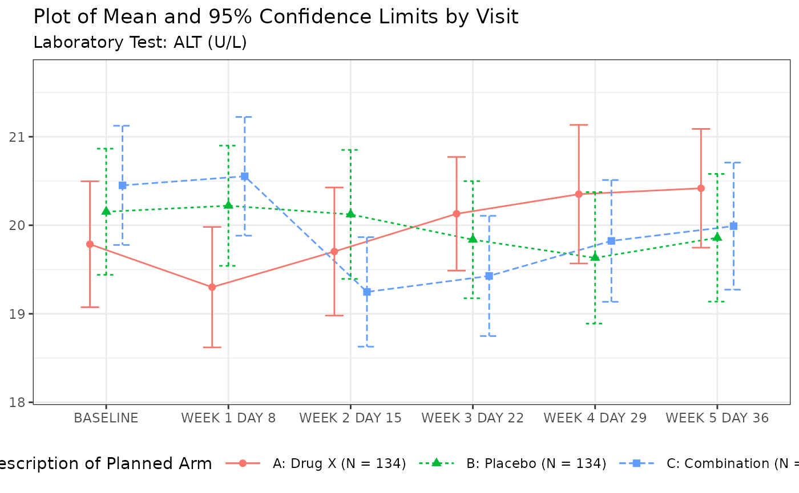
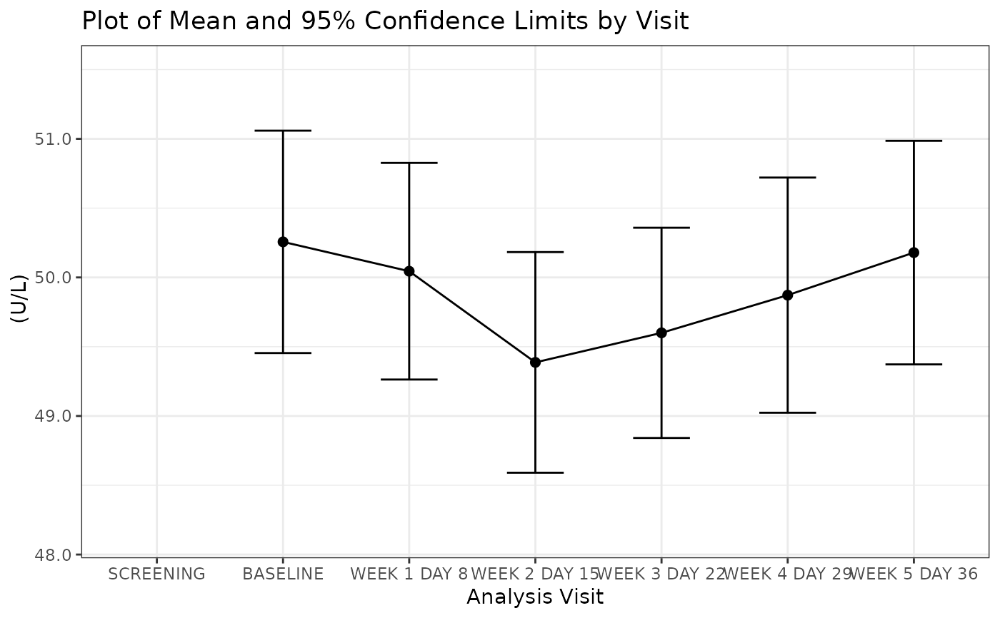
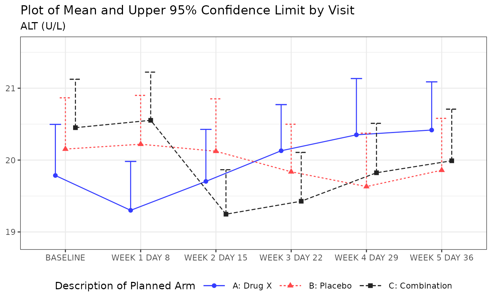
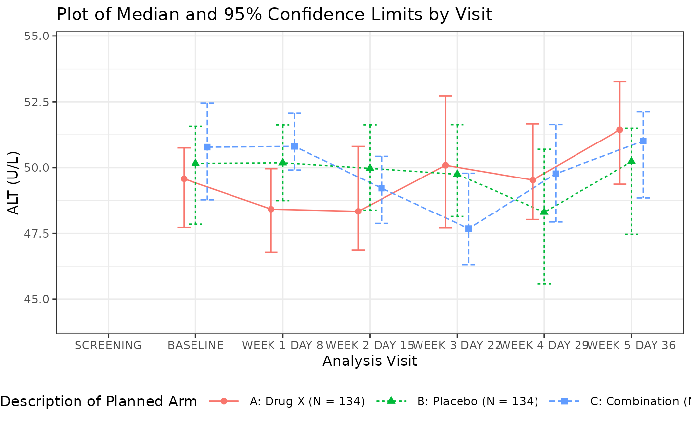
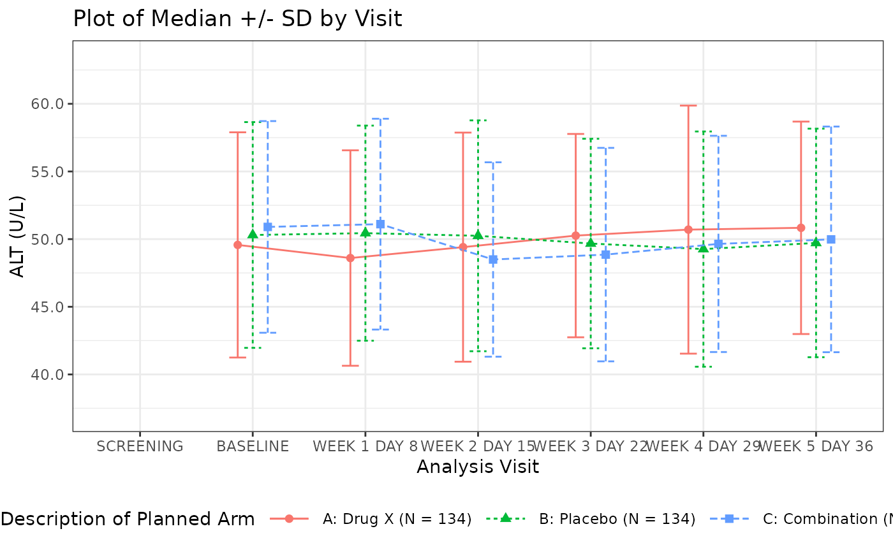
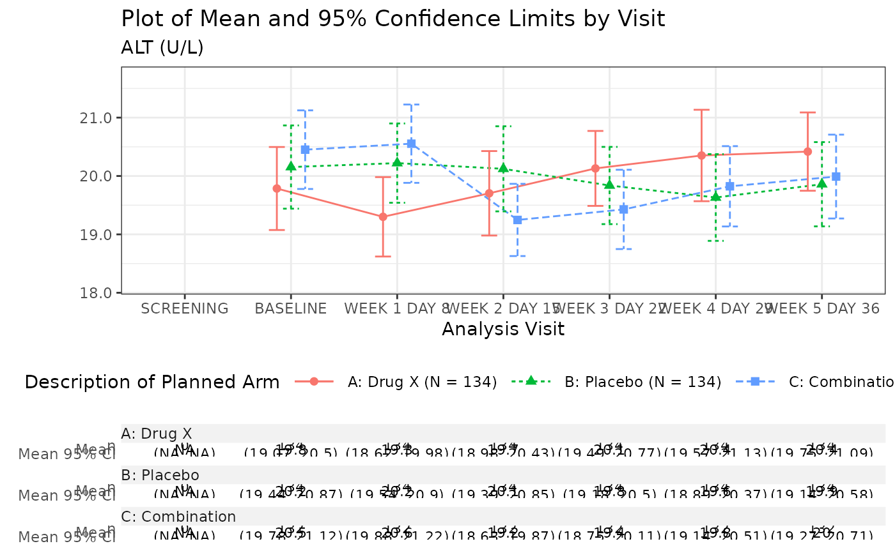
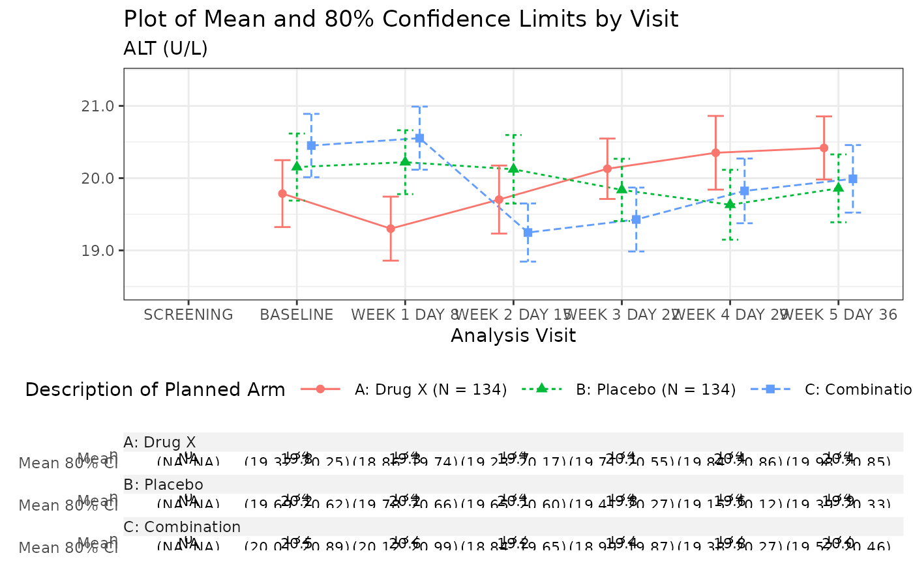
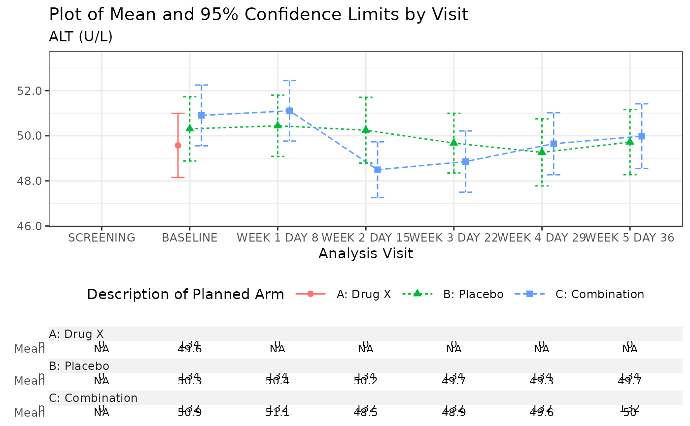

Line plot with the optional table
g_lineplot(
df,
alt_counts_df = NULL,
variables = control_lineplot_vars(),
mid = "mean",
interval = "mean_ci",
whiskers = c("mean_ci_lwr", "mean_ci_upr"),
table = NULL,
sfun = tern::s_summary,
...,
mid_type = "pl",
mid_point_size = 2,
position = ggplot2::position_dodge(width = 0.4),
legend_title = NULL,
legend_position = "bottom",
ggtheme = NULL,
y_lab = NULL,
y_lab_add_paramcd = TRUE,
y_lab_add_unit = TRUE,
title = "Plot of Mean and 95% Confidence Limits by Visit",
subtitle = "",
subtitle_add_paramcd = TRUE,
subtitle_add_unit = TRUE,
caption = NULL,
table_format = tern::summary_formats(),
table_labels = tern::summary_labels(),
table_font_size = 3,
newpage = TRUE
)
Arguments
| df |
(data frame or tibble)
data set containing all analysis variables. |
| alt_counts_df |
(data frame or tibble or NULL)
data set that will be used (only) to counts objects in strata. |
| variables |
(named character vector) of variable names in df data set. Details are:
x: x-axis variable.
y: y-axis variable.
strata: grouping variable, i.e. treatment arm. Can be NA to indicate lack of groups.
paramcd: the variable name for parameter's code. Used for y-axis label and plot's subtitle.
Can be NA if paramcd is not to be added to the y-axis label or subtitle.
y_unit: variable with units of y. Used for y-axis label and plot's subtitle.
Can be NA if y unit is not to be added to the y-axis label or subtitle.
|
| mid |
(character or NULL)
names of the statistics that will be plotted as midpoints.
All the statistics indicated in mid variable must be present in the object returned by sfun,
and be of a double or numeric type vector of length one. |
| interval |
(character or NULL)
names of the statistics that will be plotted as intervals.
All the statistics indicated in interval variable must be present in the object returned by sfun,
and be of a double or numeric type vector of length two. |
| whiskers |
(character)
names of the interval whiskers that will be plotted. Must match the names attribute of the
interval element in the list returned by sfun.
It is possible to specify one whisker only, lower or upper. |
| table |
(character or NULL)
names of the statistics that will be displayed in the table below the plot.
All the statistics indicated in table variable must be present in the object returned by sfun. |
| sfun |
(closure)
the function to compute the values of required statistics.
It must return a named list with atomic vectors.
The names of the list elements refer to the names of the statistics
and are used by mid, interval, table.
It must be able to accept as input a vector with data for which statistics are computed. |
| ... |
optional arguments to sfun. |
| mid_type |
(character scalar)
controls the type of the mid plot, it can be point (p), line (l), or point and line (pl). |
| mid_point_size |
(integer or double)
controls the font size of the point for mid plot. |
| position |
(character or call)
geom element position adjustment, either as a string, or the result of a call to a position adjustment function. |
| legend_title |
(character string)
legend title. |
| legend_position |
(character)
the position of the plot legend (none, left, right, bottom, top, or two-element numeric vector). |
| ggtheme |
(theme)
a graphical theme as provided by ggplot2 to control outlook of the plot. |
| y_lab |
(character scalar)
y-axis label.
If it equals to NULL, then no label will be added. |
| y_lab_add_paramcd |
(logical scalar)
should paramcd, i.e. unique(df[[variables["paramcd"]]]) be added to the y-axis label y_lab? |
| y_lab_add_unit |
(logical scalar)
should y unit, i.e. unique(df[[variables["y_unit"]]]) be added to the y-axis label y_lab? |
| title |
(character scalar)
plot title. |
| subtitle |
(character scalar)
plot subtitle. |
| subtitle_add_paramcd |
(logical scalar)
should paramcd, i.e. unique(df[[variables["paramcd"]]]) be added to the plot's subtitle subtitle? |
| subtitle_add_unit |
(logical scalar)
should y unit, i.e. unique(df[[variables["y_unit"]]]) be added to the plot's subtitle subtitle? |
| caption |
(character scalar)
optional caption below the plot. |
| table_format |
(named character or NULL)
format patterns for descriptive statistics used in the (optional) table appended to the plot.
It is passed directly to the h_format_row function through the format parameter.
Names of table_format must match the names of statistics returned by sfun function. |
| table_labels |
(named character or NULL)
labels for descriptive statistics used in the (optional) table appended to the plot.
Names of table_labels must match the names of statistics returned by sfun function. |
| table_font_size |
(integer or double)
controls the font size of values in the table. |
| newpage |
(logical scalar)
should plot be drawn on new page? |
Value
ggplot or gtable object,
depending on whether or not a table is appended to the plot.
Author
Wojciech Wojciak wojciech.wojciak@contractors.roche.com
Examples
adsl <- scda::synthetic_cdisc_data("latest")$adsl
adlb <- scda::synthetic_cdisc_data("latest")$adlb
adlb <- dplyr::filter(adlb, ANL01FL == "Y", PARAMCD == "ALT", AVISIT != "SCREENING")
# Mean with CI
g_lineplot(adlb, adsl, subtitle = "Laboratory Test:")

# Mean with CI, no stratification
g_lineplot(adlb, variables = control_lineplot_vars(strata = NA))

# Mean, upper whisker of CI, no strata counts N
g_lineplot(adlb, whiskers = "mean_ci_upr",
title = "Plot of Mean and Upper 95% Confidence Limit by Visit"
)

# Median with CI
g_lineplot(adlb, adsl, mid = "median", interval = "median_ci",
whiskers = c("median_ci_lwr", "median_ci_upr"),
title = "Plot of Median and 95% Confidence Limits by Visit"
)

# Mean, +/- SD
g_lineplot(adlb, adsl, interval = "mean_sdi", whiskers = c("mean_sdi_lwr", "mean_sdi_upr"),
title = "Plot of Median +/- SD by Visit"
)

# Mean with CI plot with stats table
g_lineplot(adlb, adsl, table = c("n", "mean", "mean_ci"))

# Mean with CI, table and customized confidence level
g_lineplot(
adlb, adsl, table = c("n", "mean", "mean_ci"),
control = control_summarize_vars(conf_level = 0.80),
title = "Plot of Mean and 80% Confidence Limits by Visit"
)

# Mean with CI, table, filtered data
adlb_f <- dplyr::filter(adlb, ARMCD != "ARM A" | AVISIT == "BASELINE")
g_lineplot(adlb_f, table = c("n", "mean"))
